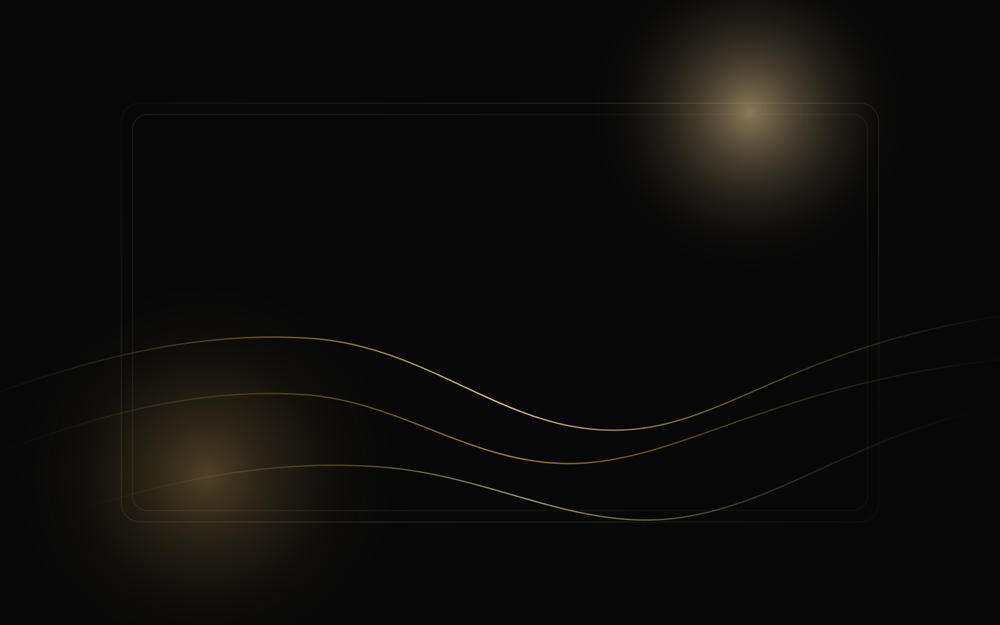
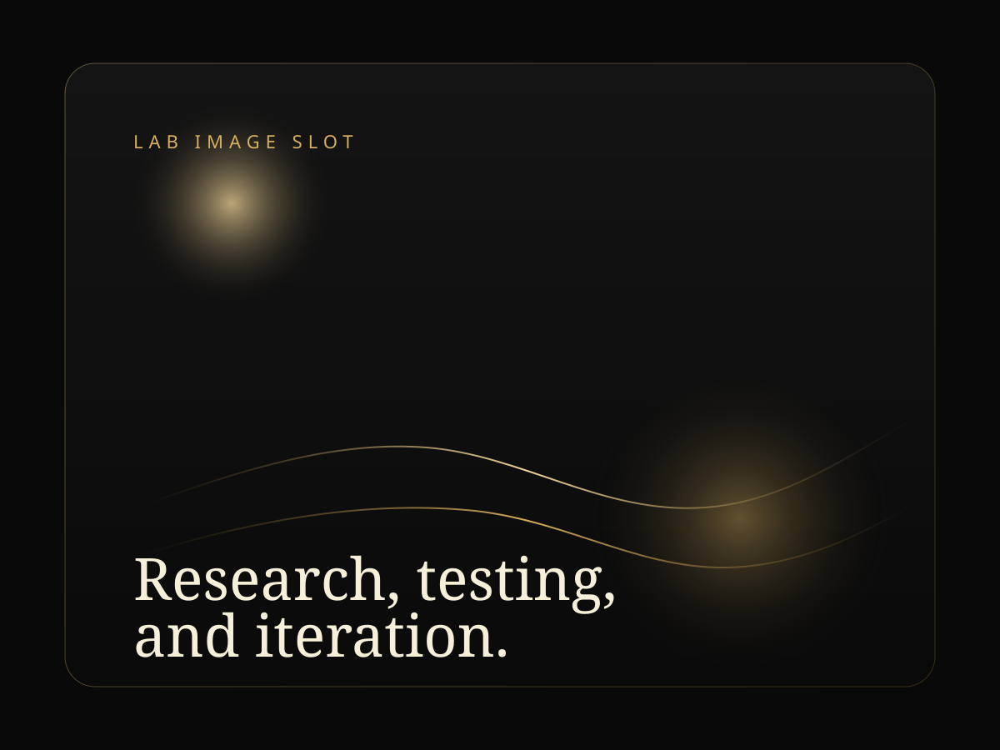
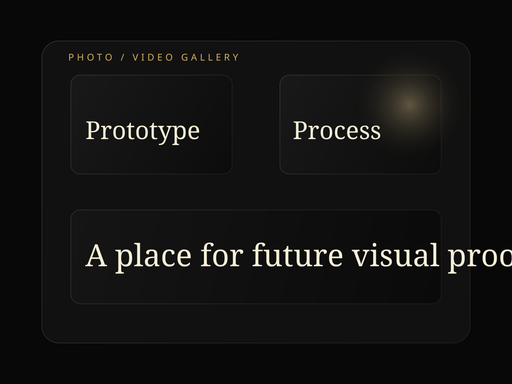

Technology
How it works at a high level
A simple explanation of the concept, components, and intended problem space.
Microwave Stove is an early-stage technology startup exploring a more understandable, intentional, and research-driven approach to microwave-based cooking hardware. This site shares what we are building, what we have learned so far, and where we hope the work can go next.
Status
Active R&D
The concept is still being shaped through experiments, prototypes, and feedback.
Approach
Transparent
We are documenting the work openly rather than presenting it as finished.
Direction
Long-Term
The goal is a serious technology platform, not a short-term gimmick.
What this website covers
Technology, experiments, progress, and future direction.
Tone
Measured and credible
Audience
Partners, investors, collaborators
Important note
This is a work-in-progress research story. We are not presenting a final product or making finished performance claims.
Inside The Website
The site is designed to make the project easier to understand without overstating what is already proven. Each page answers a different part of the story.
Technology
A simple explanation of the concept, components, and intended problem space.
Journey
The observations, motivations, and milestones that pushed the work forward.
Experiments
An honest view of active learning, open questions, and next technical steps.
Contact
Conversations with collaborators, researchers, early supporters, and curious partners.
What We Are Building
We are exploring how microwave energy could be used inside a more intentional cooking system, rather than treated as a hidden background process inside a conventional appliance. The focus is on clarity, control, and better understanding of what is happening during use.
Why We Built This
Many people understand heat on a stove or in an oven more intuitively than microwave behavior. That gap in understanding creates hesitation, inconsistency, and missed design opportunities. We started this project to ask whether the category itself could be rethought.
Where We Are Headed
The next chapter is not about rushing to market. It is about learning enough to make stronger decisions: what works, what does not, which use cases matter, and how the concept should evolve responsibly.
Media Ready
This section is intentionally ready for updates as the project grows. You can swap placeholder visuals for experiment footage, prototype photos, sketches, or founder updates later.

Featured Video Slot
Prototype overview or founder diary
Replace this area later with an embedded product walkthrough, lab update, or technical explainer.

Lab photo space
Use this block for hardware bench shots, assembly details, or test environment photography.

Documentation gallery
A second slot for progress snapshots, interface mockups, or side-by-side comparisons over time.
Early Stage Note
We want the website to reflect that honestly. Some ideas may change. Some assumptions may fail. Some experiments may redirect the roadmap. That openness is part of the point.
Clarity
Explain the concept in language broad audiences can understand.
Credibility
Avoid unsupported claims and show where the work still needs proof.
Curiosity
Invite thoughtful conversations from people who care about the category.